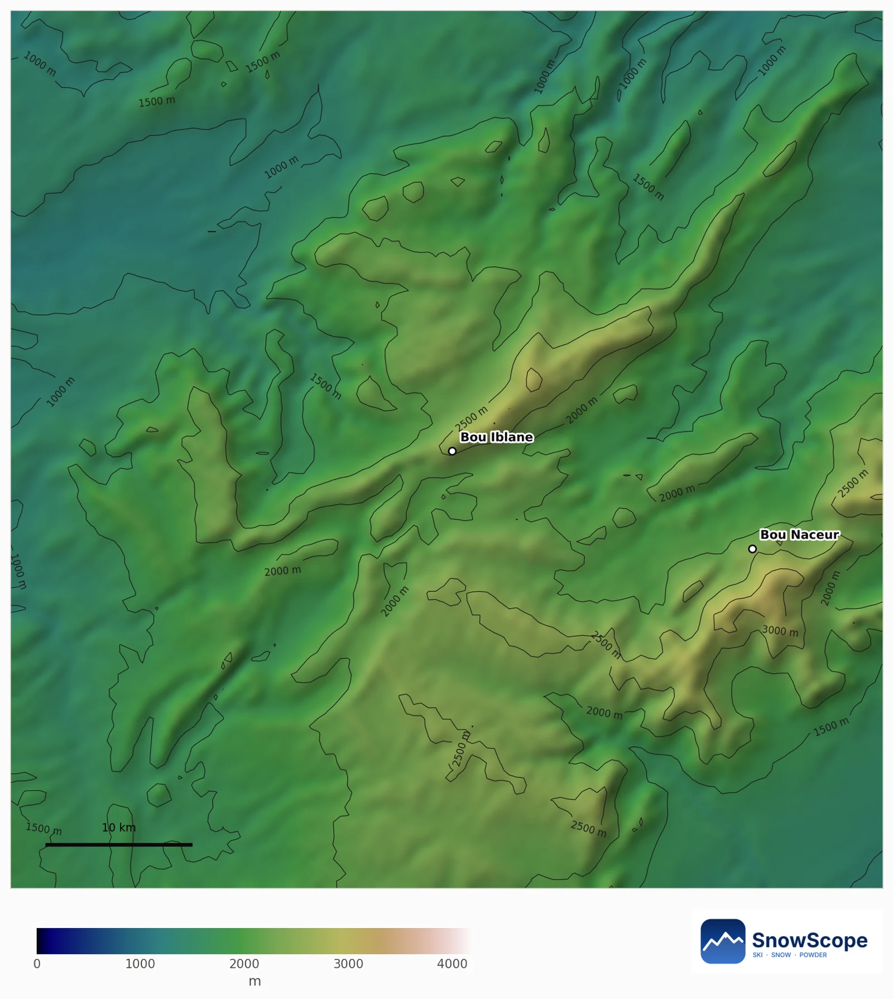
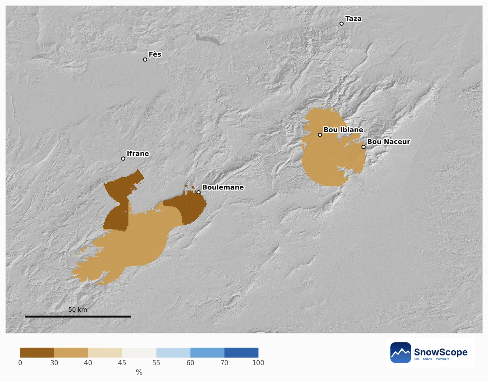
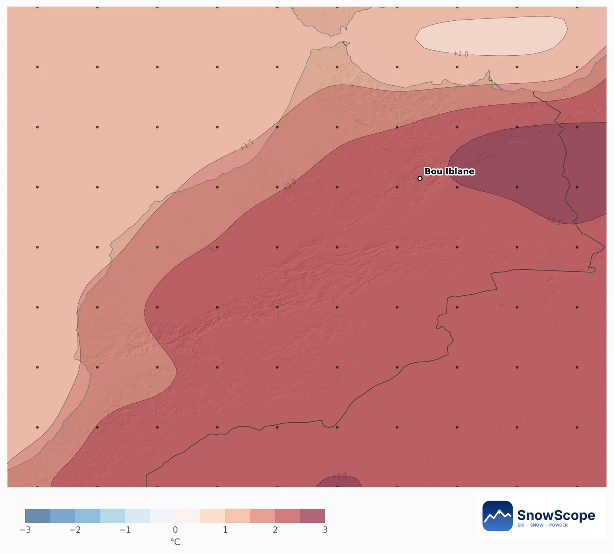
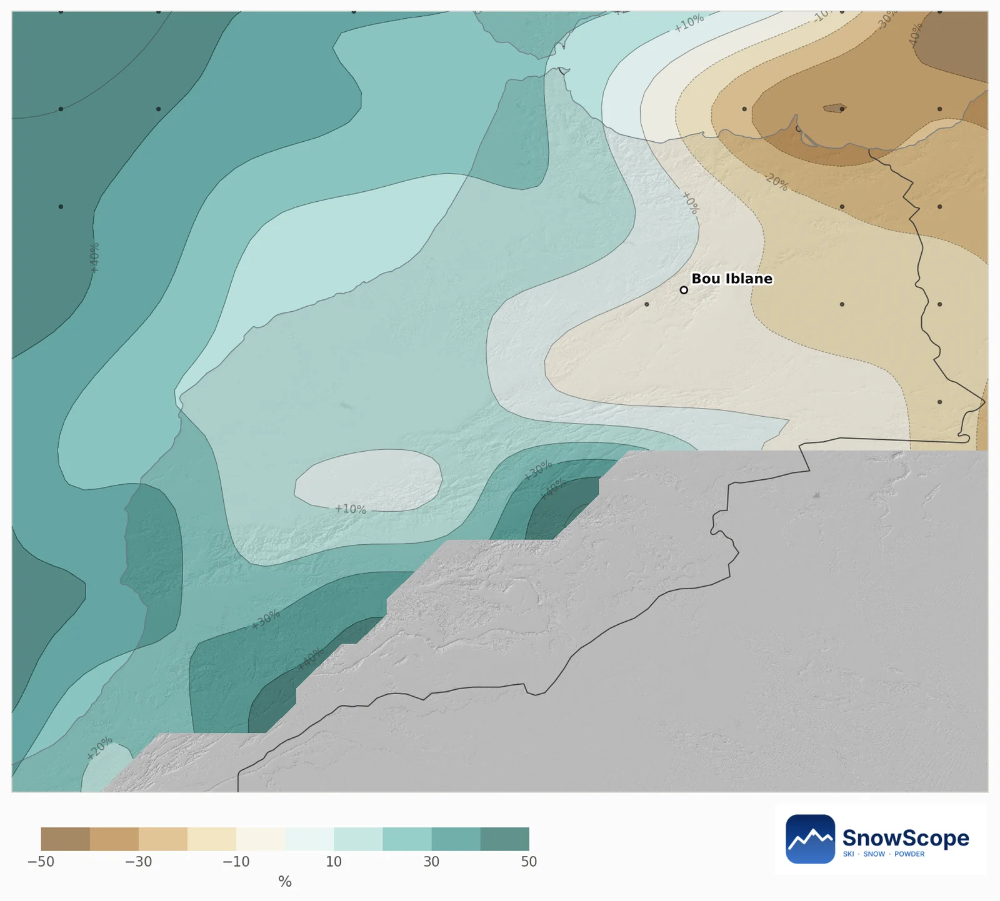
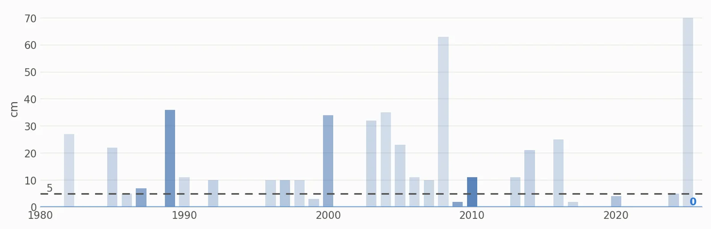
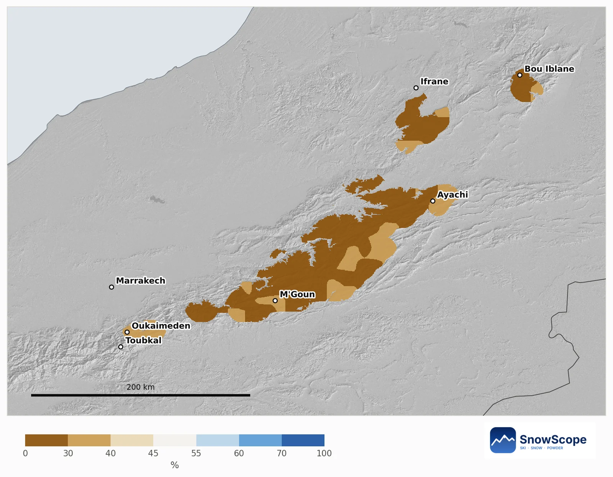
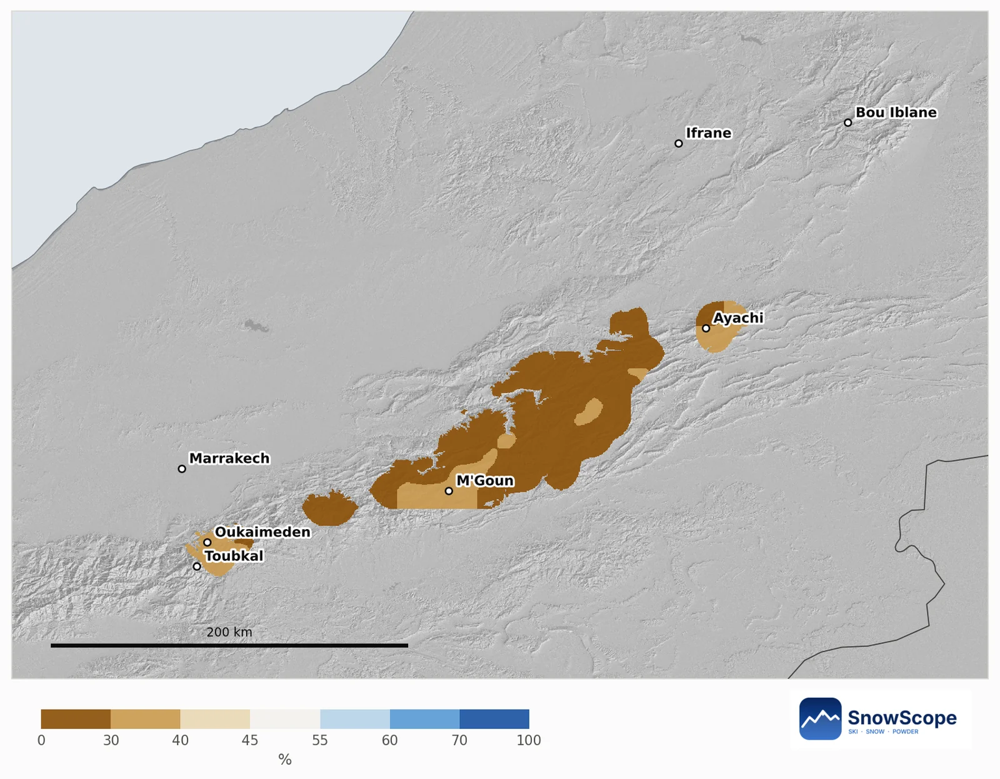

Bou Iblane a dicembre 2026: pendii spogli, un mese caldo e poche probabilità di neve nel Medio Atlante
Salite oggi sul Bou Iblane e non troverete neve: l'alto massiccio del Medio Atlante orientale è ancora spoglio. La previsione stagionale per dicembre è nettamente calda, e ovunque il Medio Atlante riceva di solito neve a dicembre, le nostre probabilità tendono a meno.
Le previsioni neve in tempo reale per Bou Iblane nell'app SnowScopeAltezza neve, allerte powder e mappa 3D, gratis.
Sul terreno oggi
La mappa del 10 novembre non mostra alcun bianco nei 60 km intorno al Bou Iblane. Invece di una mappa della neve vuota mostriamo quindi il terreno: la lunga cresta del Bou Iblane e, più a est, il Bou Naceur. È su queste quote alte che di solito si ferma la prima neve che dura.
Ogni cima nevosa tende a meno
Per la mappa della tendenza confrontiamo ogni zona di montagna di circa 10 km con i suoi dicembre passati, e mostriamo solo le zone che di solito vedono neve a dicembre. Quest'anno tendono tutte a meno neve. La probabilità di più neve fresca di un dicembre abituale va dal 28 % al 40 %; il valore centrale è il 33 %.
In alto sul Bou Iblane, verso 2700 m, un dicembre abituale porta 23 cm di neve fresca, ma il 31 dicembre ne restano al suolo solo 5 cm. In queste montagne secche il sole e le giornate miti tra una perturbazione e l'altra ne sciolgono la maggior parte. Per quest'anno la tendenza è di 22 cm di neve fresca e 0 cm il 31 dicembre, molto probabilmente tra 0 e 9 cm. La probabilità di più neve del solito il 31 dicembre: 30 %.

Qui decide il caldo
Il sistema stagionale del centro meteo europeo ha 51 corse, e quasi tutte concordano sul caldo: il 96 % rende dicembre più caldo del solito, in media di 2,3 °C sul Medio Atlante. Su pioggia e neve non sono d'accordo: il 41 % è più umido, e in media le precipitazioni sono il 2 % sopra un dicembre abituale di 42 mm.
Nel Medio Atlante la temperatura conta più che nelle Alpi. Sul Bou Iblane la neve segue prima di tutto le precipitazioni (correlazione 0,86), ma un dicembre caldo toglie chiaramente neve (correlazione -0,38). Il massiccio è più basso, quindi bastano pochi gradi per trasformare in pioggia la neve di una perturbazione.


Cosa dicono i dicembre passati
Guardando indietro, i dicembre con il tempo più vicino a questa previsione sono il 2022, il 2010 e il 2002. Anche così, una sola perturbazione fredda da nord-ovest può imbiancare le cime per giorni: leggetela come una tendenza delle probabilità, non come un mese secco già deciso.
Tenete d'occhio la previsione a 7 giorni. Quando aria fredda e perturbazione arrivano insieme, Bou Iblane e Bou Naceur si imbiancano per primi.

Consigli per sciatori
- Per un'escursione invernale sul Bou Iblane, organizzatevi con la previsione a 7 giorni, non con una tendenza mensile.
- Dopo una perturbazione cercate la neve sui pendii esposti a nord sopra circa 2700 m: lì dura più a lungo.
- Guardate la mappa SnowScope prima di partire: in un mese caldo la neve del Medio Atlante spesso fonde in pochi giorni.
Riferimenti e crediti
- ECMWF SEAS5 seasonal forecasts, Copernicus Climate Change Service (C3S) cds.climate.copernicus.eu/datasets/seasonal-postprocessed-single-levels
- ERA5 monthly averaged data, Copernicus Climate Change Service (C3S) cds.climate.copernicus.eu/datasets/reanalysis-era5-single-levels-monthly-means
Su questi numeri
Metodo. Temperatura e precipitazioni: la previsione stagionale del centro meteo europeo (ECMWF SEAS5, 51 corse partite il 1° novembre 2026, anomalie rispetto alle sue riprevisioni 1993-2016, griglia di circa 100 km). Neve: per ogni cella di montagna di circa 10 km usiamo il nostro modello del passato (46 inverni, altezza della neve corretta per la quota) e il tempo di ogni dicembre dal 1981 al 2025 (ERA5); i dicembre passati con temperatura e precipitazioni simili a ciascuna corsa contano di più, e la loro neve dà le probabilità. Neve di oggi: la mappa della neve SnowScope (500 m). Una tendenza mensile sposta solo le probabilità: non prevede una tempesta né una data.
Cita questo articolo
Per ricerca, didattica o stampa: numeri e grafici sono liberamente riutilizzabili con licenza CC BY 4.0 citando così.
SnowScope (2026), Bou Iblane a dicembre 2026: pendii spogli, un mese caldo e poche probabilità di neve nel Medio Atlante, https://snowscope.app/blog/it/2026/11/bou-iblane-december-2026-snow-outlook.html, consultato il 2026-11-10
SnowScope (Atlas Labs). (2026, November 10). Bou Iblane a dicembre 2026: pendii spogli, un mese caldo e poche probabilità di neve nel Medio Atlante. SnowScope snow reports. https://snowscope.app/blog/it/2026/11/bou-iblane-december-2026-snow-outlook.html
BibTeX
@misc{snowscope2026bouiblanedecember2026sno,
author = {{SnowScope (Atlas Labs)}},
title = {Bou Iblane a dicembre 2026: pendii spogli, un mese caldo e poche probabilità di neve nel Medio Atlante},
year = {2026},
month = nov,
howpublished = {\url{https://snowscope.app/blog/it/2026/11/bou-iblane-december-2026-snow-outlook.html}},
note = {Published 2026-11-10 10:48 UTC; accessed 2026-11-10}
}· CC BY 4.0 · Metodi, dati e strumenti →
Segui Bou Iblane
Gratis: un messaggio quando arriva la neve e il meteo ogni mattina.
Altri bollettini neve

La previsione stagionale europea rende gennaio 2027 circa 2 °C più caldo sull'Atlante. La nostra tendenza per altezza della neve, acqua nella neve e acqua immagazzinata per i fiumi del Marocco.

Quanta acqua potrebbe tenere la neve dell'Atlante a febbraio 2027: la previsione stagionale europea è di circa 3 °C più calda e più umida a ovest e a sud, e le probabilità di neve restano basse sui bacini del Marocco.

Bollettino neve sull'Atlante (Marocco), 12 novembre. Località sciistiche dell'Atlante oggi: niente neve sulle piste. Neve solo sulle vette più alte: …